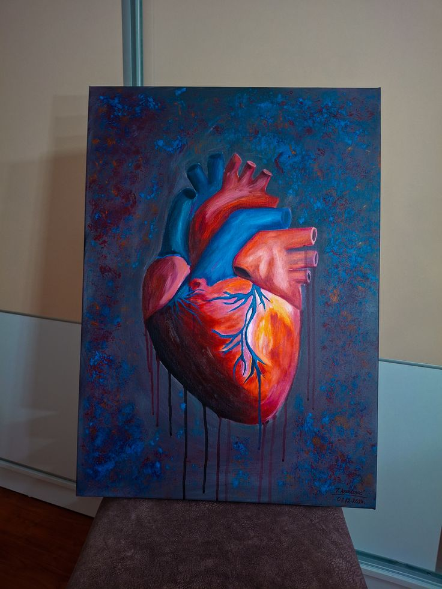
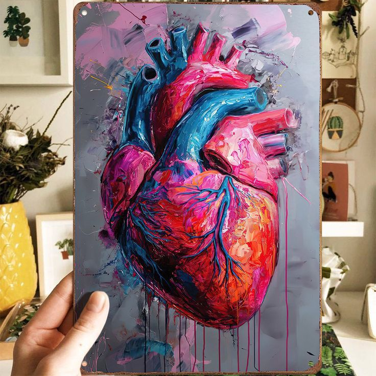
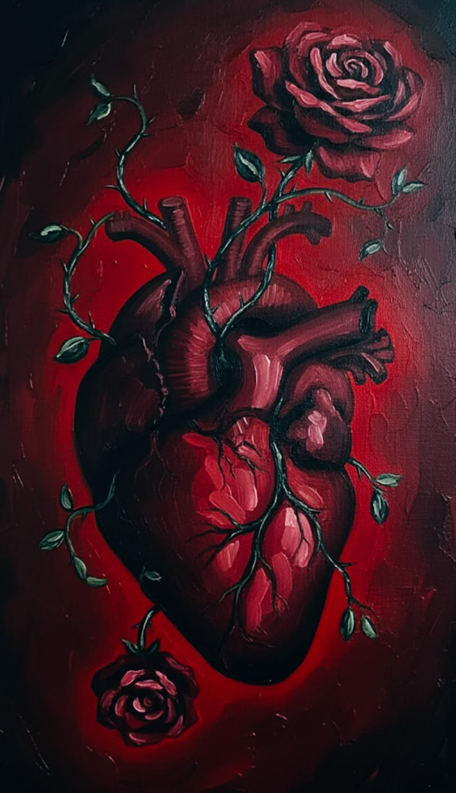

there's a lung sitting on my canvas.
half of it is breathing. the other half is... not. vitality and decay. acrylics are unforgiving if you don't know what you're doing, and i am still very much figuring out what i'm doing. digital art has spoiled me, honestly. it lets you ctrl+z your mistakes away and pretend they never happened. the canvas doesn't do that. it remembers every heavy stroke, every misplaced line, every time your hand shook because you were thinking too fast.
it's highly symbolic, which is probably the most infj thing i could possibly say right now. but there's something about putting a physical concept of breath onto a canvas that forces you to slow down. i wanted to contrast the vibrant, oxygen-rich side with something that looks like it's quietly giving up. i spent hours trying to get the shading right on the decaying tissue, blending deep purples and muted greys, looking up medical references just to see how texture changes when things go wrong.



it's a good reminder that not everything can be undone. some things you just have to paint over. you have to accept that the texture underneath is going to alter whatever you put on top of it, and you just keep going anyway. it's therapeutic in a stressful kind of way. you stare at a blank space, you make a mess, and then you spend the next three days turning that mess into something that feels like an answer.
i keep coming back to the duality of it. the two halves of the same organ doing opposite things. the vibrant pink of healthy tissue against the grey-purple of tissue that has decided it's done. it's not death exactly. it's the moment before. the in-between state where something is still technically functioning but you can see it winding down from the inside.
that felt like the right thing to paint right now. i don't think i was painting a lung. i think i was painting a season. the part of a season where you can feel something ending even though it hasn't technically ended yet. where the light is still there but it's different. more tired. less insistent.
i'll keep going with it. the canvas has earned its share of my confusion, and i owe it at least an attempt at resolution.
← Back to Blog